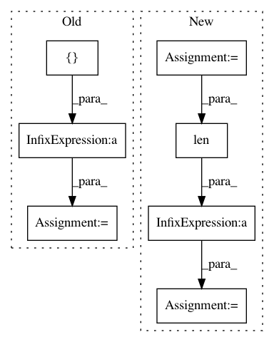

0389fda574d618ec22b488208a1d597a18d7ce72,examples/next-frame.py,NextFrameGAN,forward_pass,#NextFrameGAN#,195
Before Change
d_real = D(x, context={"c": c})
self.c = c
self.d_fake_inputs = []
rems = [None]+gs[:self.frames-1]
for g, c in zip(gs[self.frames-1:], gcs):
rems = rems[1:] + [g]
d_fake_input = torch.cat(rems, dim=1)
self.d_fake_inputs.append(d_fake_input)
After Change
def forward_pass(self, frames, x, cs, gs, gcs, rgs, rcs, loss):
d_fakes = []
d_losses = []
g_losses = []
D = self.discriminator
if self.config.discriminator3d:
if self.config.gcsf:
c = gcs[0][:,:,None,:,:]
else:
c = cs[-1][:,:,None,:,:]
else:
c = cs[-1]
d_real = D(x, context={"c": c})
self.d_real = d_real
self.c = c
self.d_fake_inputs = []
rems = frames//gs[:self.frames]
for g, c in zip(gs, gcs):
rems = rems[1:] + [g]
d_fake_input = torch.cat(rems, dim=1)
self.d_fake_inputs.append(d_fake_input)
d_fake = D(d_fake_input, context={"c": c})
d_fakes.append(d_fake)
_d_loss, _g_loss = loss.forward(d_real, d_fake)
d_losses.append(_d_loss)
g_losses.append(_g_loss)
if len(rgs) > 0:
grems = rgs[:len(rems)]
rc = rcs[len(rems)-1]
if config.discriminator3d:
grems = [g[:,:,None,:,:] for g in grems]
rc = rc[:,:,None,:,:]
d_fakes.append(D(torch.cat(grems, dim=2), context={"c":rc}))
else:
d_fakes.append(D(torch.cat(grems, dim=1), context={"c":rc}))
for rg, rc in zip(rgs[len(rems):], rcs[len(rems):]):
grems = grems[1:] + [rg]
d_fakes.append(D(torch.cat(grems, dim=1), context={"c":rc}))
d_loss = sum(d_losses)/len(d_losses)
g_loss = sum(g_losses)/len(g_losses)
return d_loss, g_loss
def forward_video_discriminator(self, cs, gcs, rcs):
In pattern: SUPERPATTERN
Frequency: 3
Non-data size: 7
Instances
Project Name: HyperGAN/HyperGAN
Commit Name: 0389fda574d618ec22b488208a1d597a18d7ce72
Time: 2020-12-24
Author: martyn@255bits.com
File Name: examples/next-frame.py
Class Name: NextFrameGAN
Method Name: forward_pass
Project Name: explosion/thinc
Commit Name: 2eef369b7ac92e38f81819307a4af4238fd953ee
Time: 2020-01-19
Author: honnibal+gh@gmail.com
File Name: thinc/backends/jax_ops.py
Class Name: JaxOps
Method Name: pad
Project Name: cesium-ml/cesium
Commit Name: e547a82c24b37c157bc9b40d2724a7b1fd0a7b0f
Time: 2017-04-17
Author: brettnaul@gmail.com
File Name: cesium/featurize.py
Class Name:
Method Name: save_featureset